MiXplorer - файловий провідник для Android.
MiXplorer — це швидкий, плавний, красивий, надійний і повнофункціональний файловий менеджер Android із простим та інтуїтивно зрозумілим інтерфейсом користувача. Підтримує SD, FTP, LAN, Cloud та інші файлові сховища. Ця програма не має реклами, є і завжди залишатиметься безкоштовною.
Остання версія: 6.66.3 B24070310
Завантажуйте останні оновлення з
Диску.
Найновіший MiXplorer
Завантажте останню BETA-версію звідси: MiX BETA
Отримайте MiX Silver із Play Store або Galaxy Store, щоб підтримати розробку цього проекту.
Завантаження з будь-якого іншого джерела не рекомендується.
Створення автоматичних завданнь буде показано на прикладі
переміщення завантажених з інтернету PDF-файлів з папки
Download в папку Documents.
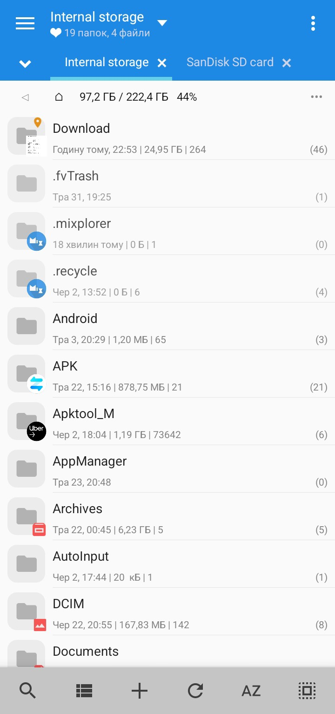
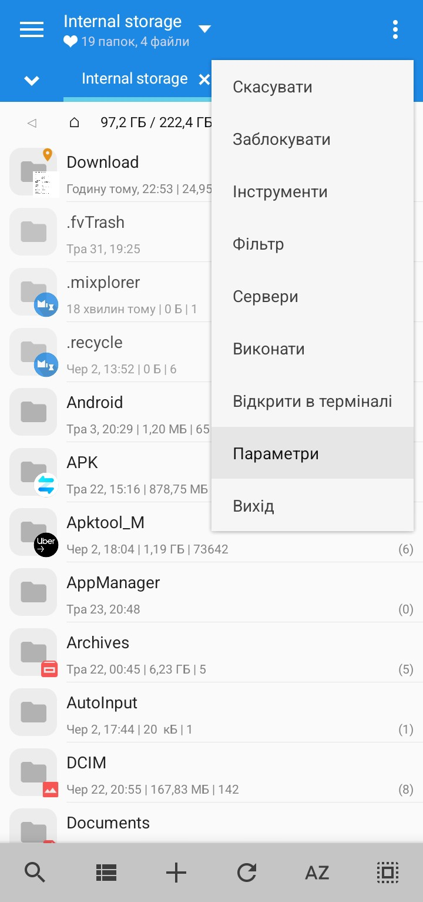
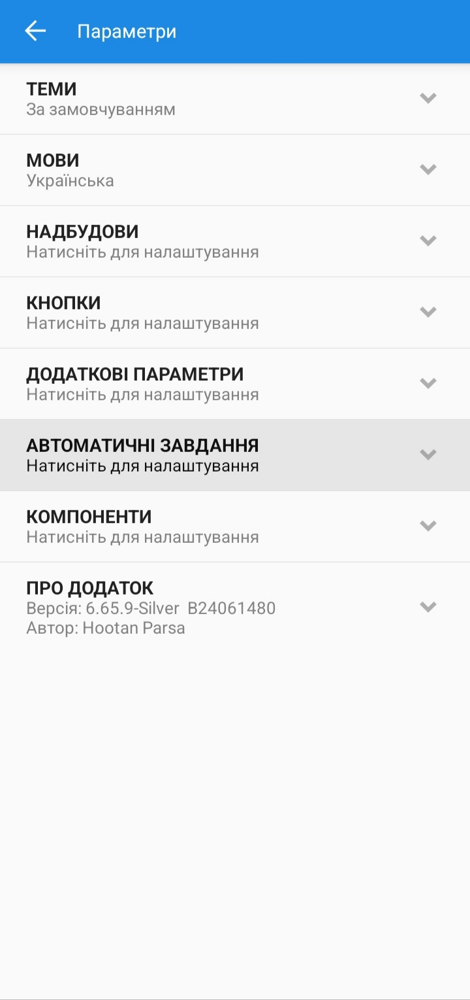
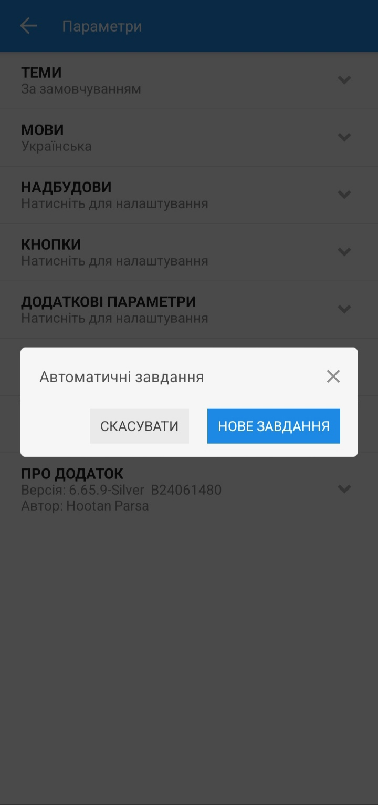
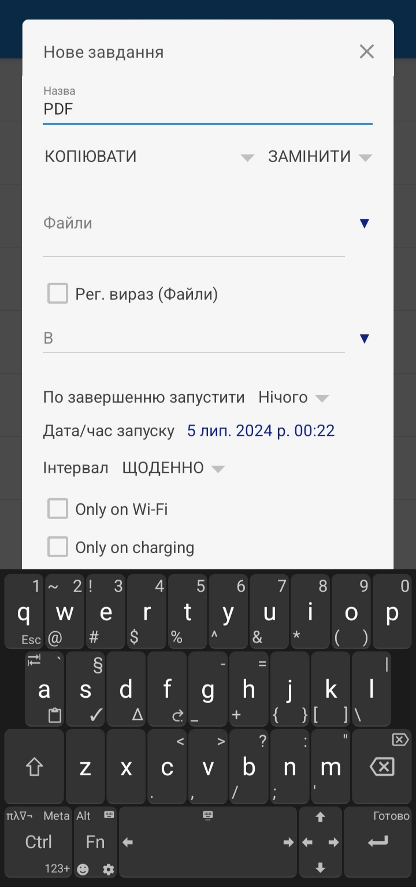
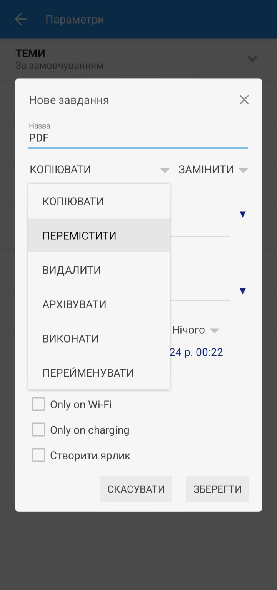
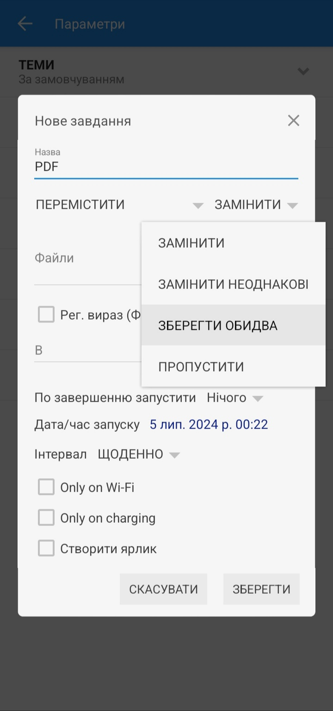
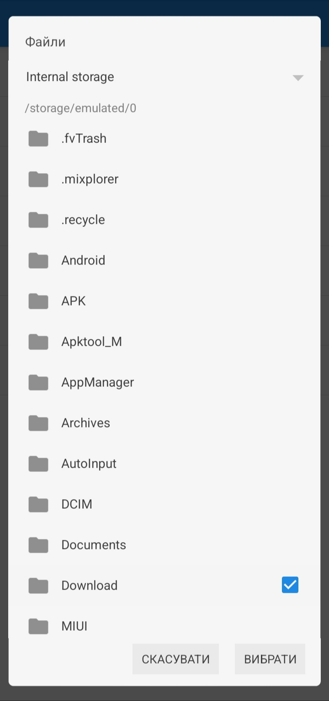
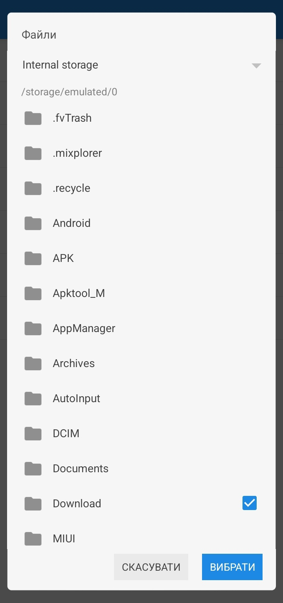
Download дописуємо /.*\.pdf.
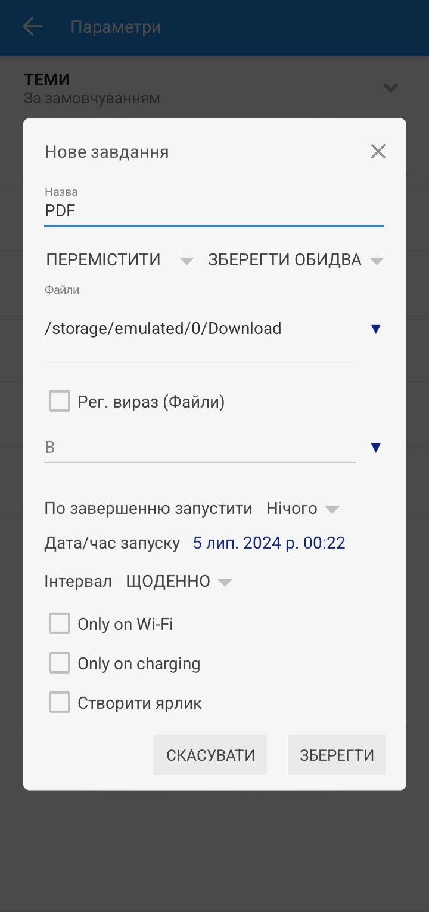
Якщо було/storage/emulated/0/Download, то має вийти
/storage/emulated/0/Download/.*\.pdf.
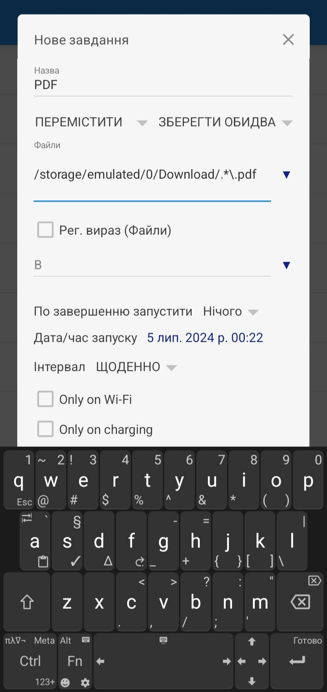
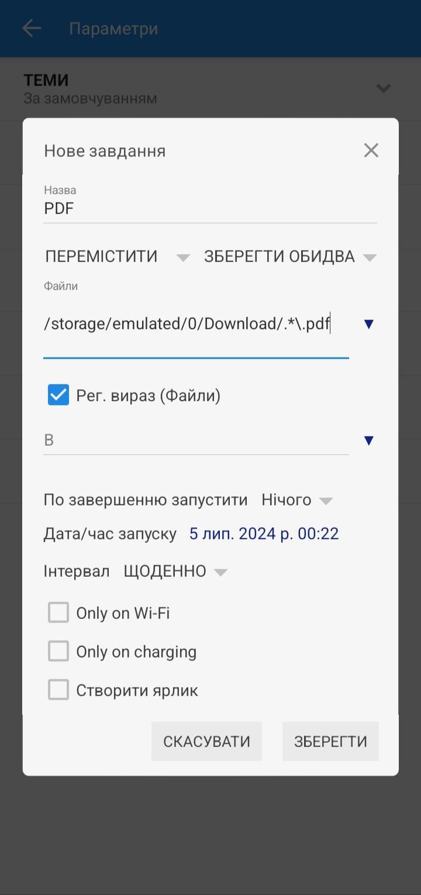
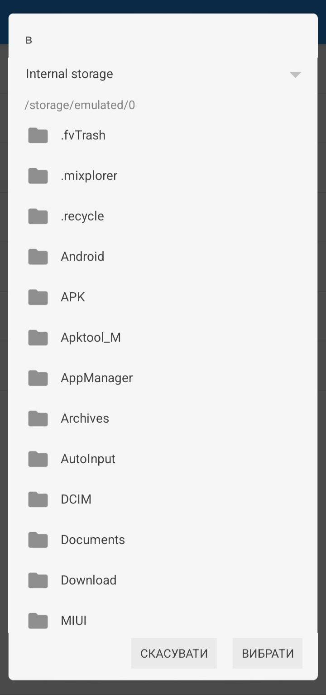
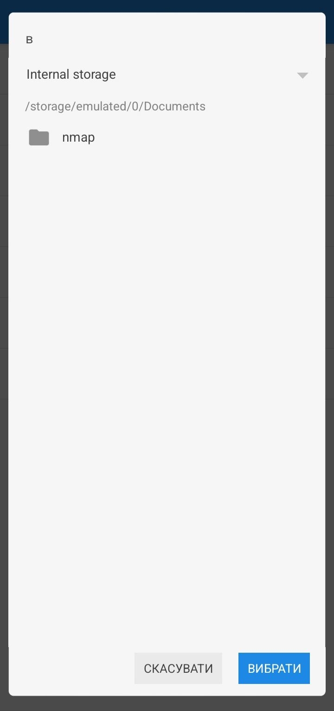
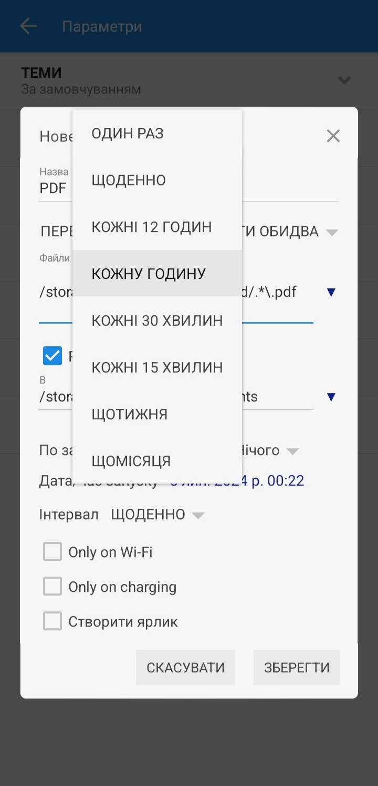
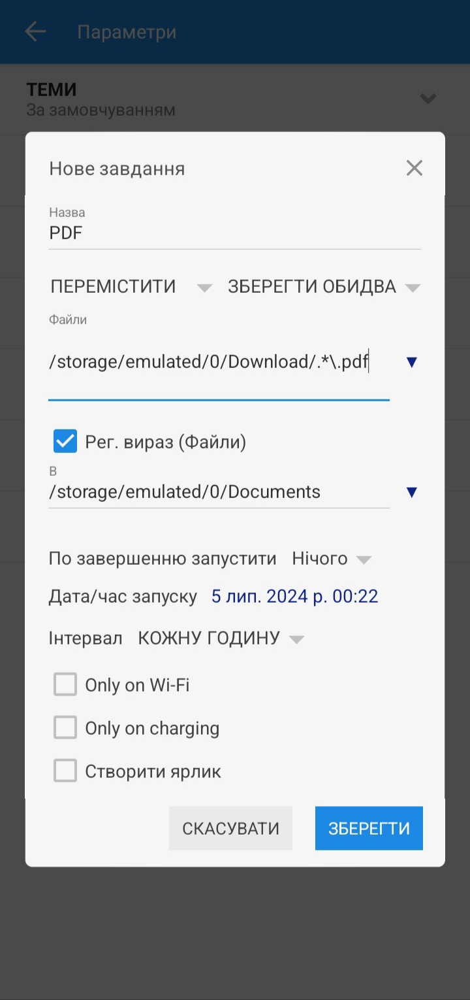
ПРИМІТКА: Переглянути створене або створити ще одне автоматичне завдання можна натиснувши пункт АВТОМАТИЧНІ ЗАВДАННЯ в налаштуваннях.
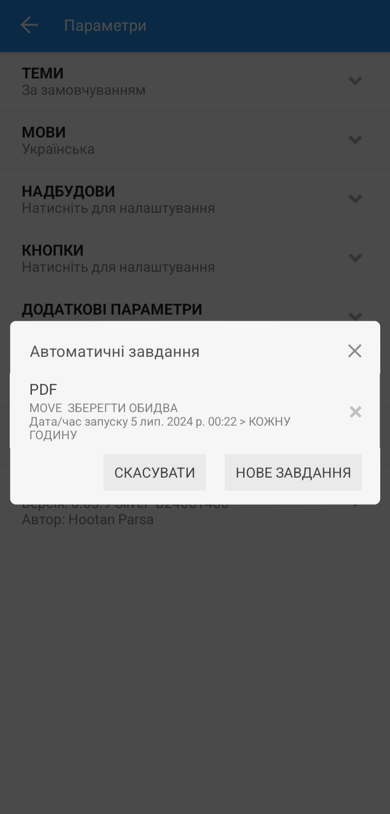
ПРИМІТКА: Щоб перевірити чи все працює, завантажте будь який файл в форматі PDF та зачекайте поки мине проміжок часу вибраний у полі Інтервал ( в прикладі: 1 година).